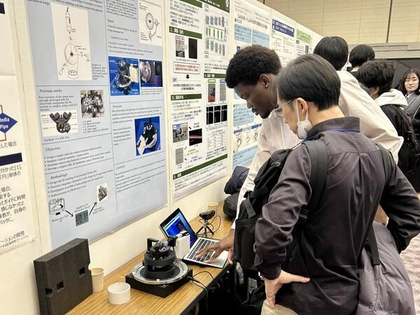
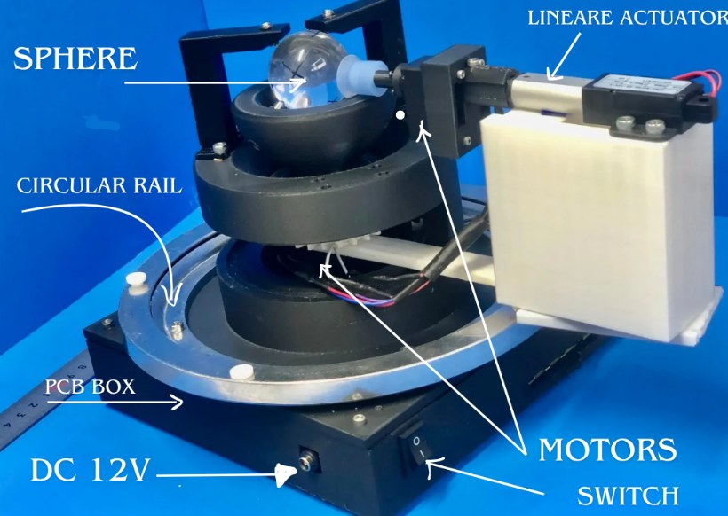
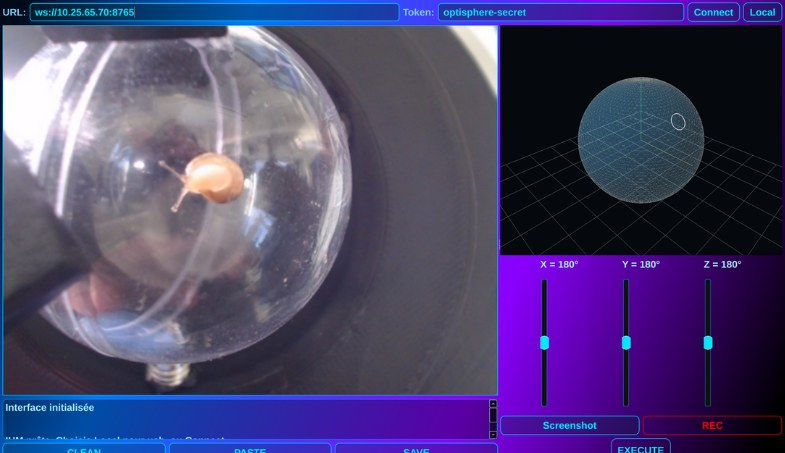
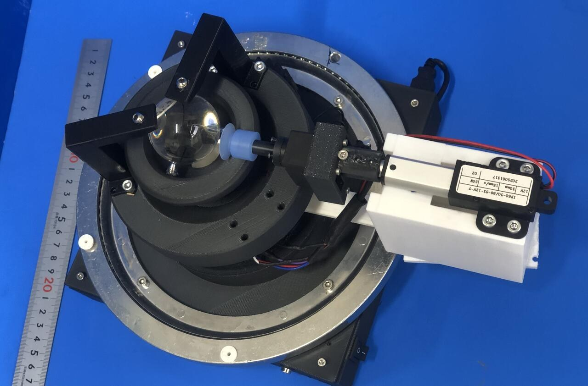
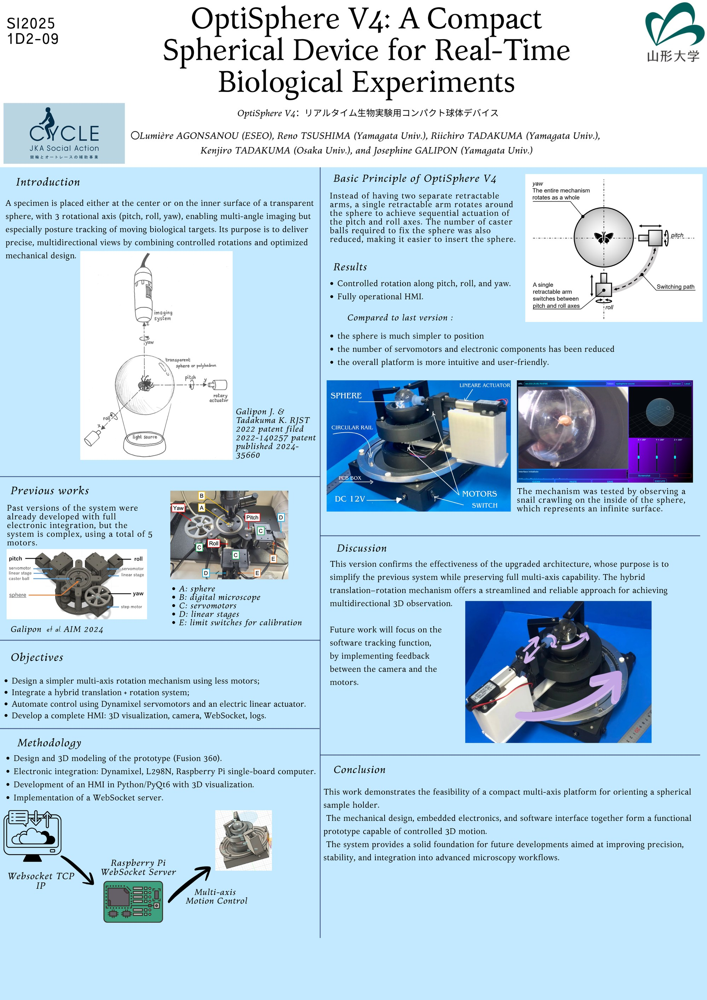

OptiSphere V4, plateforme sphérique pour l'observation biologique en temps réel
Stage R&D au Galipon Lab, Université de Yamagata (Japon), juillet à décembre 2025
L'échantillon est placé dans une sphère transparente que le système oriente sur trois axes (tangage, roulis, lacet) pour l'observer au microscope sous tous les angles. Un bras rétractable unique, qui tourne autour de la sphère, remplace les deux bras de la version précédente : moins de moteurs et une sphère plus simple à mettre en place. Validé en suivant un escargot qui rampe à l'intérieur de la sphère, comme sur une surface infinie.
- Motorisation : servomoteurs Dynamixel XC330 chaînés sur bus UART (U2D2), vérin électrique 12 V piloté par L298N, Raspberry Pi
- Commande : réglage PID et mode PWM des servomoteurs
- Logiciel : serveur WebSocket sur Raspberry Pi, machine à états, IHM Python/PyQt6 avec visualisation 3D
- Hardware : PCB sous Altium Designer et alimentation buck 12→5 V simulée sous LTspice
- Mécanique : conception 3D sous Fusion 360 et SolidWorks, impression 3D, slip ring
- Premier auteur du poster présenté à la conférence SI2025 à Hiroshima (voir le poster en PDF)
- Dynamixel
- Raspberry Pi
- Python
- PyQt6
- WebSocket
- Altium
- LTspice
- Fusion 360